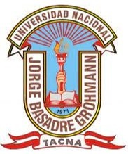
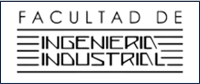

UNIVERSIDAD NACIONAL DE INGENIERIA
UNIVERSIDAD NACIONAL DE INGENIERIA
UNIVERSIDAD NACIONAL DE INGENIERIA
UNIVERSIDAD NACIONAL DE INGENIERIA
UNIVERSIDAD NACIONAL DE INGENIERIA
UNIVERSIDAD NACIONAL DE INGENIERIA
UNIVERSIDAD NACIONAL DE INGENIERIA
UNIVERSIDAD NACIONAL DE INGENIERIA


VISION & MISION
THE EPICENTER SAC.
Es una organización PRIVADA que, en colaboración con sus socios estrategicos,
investiga y desarrolla tecnologías en el área de la Industria 4.0.
- Nuestra Misión: Vincular propuestas tecnológicas de vanguardia en los campos de la fisicoquímica de materiales avanzados, la ingeniería de procesos e isótopos, así como en los sectores de minería, metalurgia, geología, biología, aeronáutica, naval, hidrocarburos y petroquímica.
- Nuestra Visión: Posicionar al Perú como un país líder y exportador de maquinaria, bienes de capital y equipos de alta precisión para el mundo globalizado.
PILARES DE ACCIÓN TECNOLÓGICA
- Línea de Isótopos y Procesos Nucleares: Modelado, simulación y desarrollo de maquinaria para la separación de isótopos y fluidodinámica supersónica (centrifugación avanzada).
- Línea de Materiales Avanzados: Investigación y testeo de compuestos de ultra alta resistencia (fibras de carbono avanzadas, acero maraging y aleaciones de alta resistencia).
- Línea de Industria 4.0: Integración de gemelos digitales, automatización, inteligencia artificial y sistemas de control adaptados a la minería y metalurgia.
OBJETIVOS ESTRATÉGICOS
- Exportación Global: Diseñar y fabricar maquinaria pesada de alta precisión con ingeniería y sello peruano.
- Propiedad Intelectual: Registrar patentes internacionales de las innovaciones generadas en nuestros laboratorios y simulaciones.
- Alianzas Globales: Consolidar acuerdos de transferencia tecnológica con las industrias estratégicas globales.
Presidente ejecutivo & Gerente general